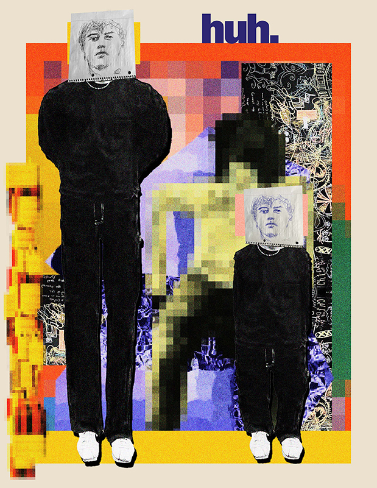

Huh UOW Works
Context
A visual study exploring atmosphere, familiarity, and surreal framing in digital art.
Problem
I needed to translate a personal emotional experience into images that felt layered, textured, and intentional.
Role
Visual Artist + Designer
Process
Built compositions through iterative experimentation with filters, edge treatments, and selective framing techniques.
Outcome
Produced expressive pieces that communicate mood through texture and controlled distortion.
Tools
Adobe Photoshop, Texture filters, Experimental compositing